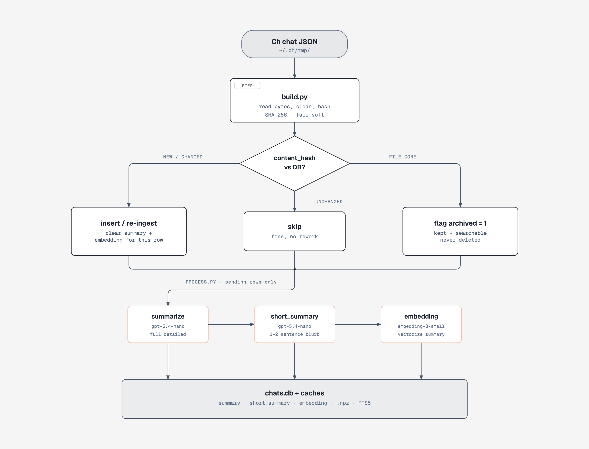
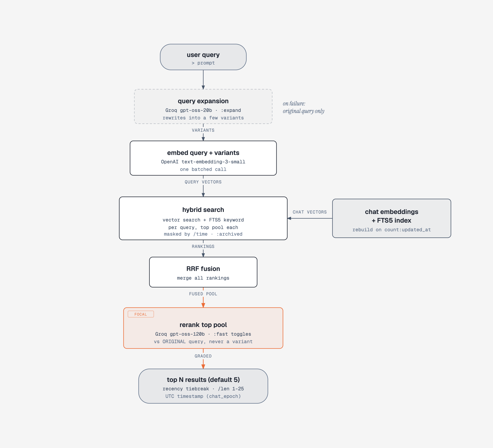

Search your
Ch
history by meaning! index_ch turns your saved Ch
conversations into a local, searchable memory so past answers, decisions,
debugging notes, and ideas are recoverable even when you don't remember
the exact words.
github · get started ·
$ python3 -m retrieve
Loaded 5,432 indexed chats
Type a query or /help
> where did I debug the auth redirect
1. ch_session_1731391200.json · Nov 12, 2025 09:45 UTC · relevance 3/3
Fixed an OAuth redirect loop by validating the callback state before
the token exchange.
2. ch_session_1729886400.json · Oct 25, 2025 16:40 UTC · relevance 2/3
Database migration notes for the new archived flag column.
3. ch_session_1725432000.json · Sep 04, 2025 12:00 UTC · relevance 1/3
React state cleanup, removing stale effect deps.
> Your best AI answers are easy to lose. When chats pile up, exact keyword search is not enough. You remember the idea, the bug, or the decision, but not the wording. index_ch retrieves the right conversation anyway.
The build.py script reads raw Ch sessions from
~/.ch/tmp/, strips auto-generated noise, and diffs SHA-256
content hashes against the database. Unchanged files are skipped for free,
while deleted files are archived so cached data is never lost. The
process.py script then summarizes pending chats, creates a
short preview blurb, and vectorizes each summary into an embedding for
semantic search. Everything lands in a local on-disk SQLite database under
~/.ch/index/, so your index stays on your machine.

The retrieve command/feature opens an interactive prompt.
Each query is optionally expanded by an LLM into a few rephrased variants
to widen recall. The original plus those variants are batched for
embedding and queried against cosine similarity and an FTS5 keyword index.
Rankings are fused with Reciprocal Rank Fusion, then reranked by an LLM
against the original query with recency tiebreaking before results are
displayed.

Speed is a priority with retrieve. The embeddings matrix is cached to disk so later launches load in under a second, and API connections are warmed in the background at startup. Rerank, query expansion, and embeddings run on OpenAI, with embeddings kept on the same model to preserve the stored vector space.
Built for the moments you almost remember.
Local-first by design. index_ch is a personal utility for your own machine. It builds a local searchable cache from your saved Ch history instead of turning it into a public web service. Summaries, embeddings, and ranking may use configured AI APIs, but the searchable cache and chat index live locally. index_ch is an independent local utility for Ch users.
Give your Ch history a memory. Set it up, run
python3 src/build.py to index your chats,
python3 src/process.py to summarize and embed them, then
python3 main.py to browse and search. Your past answers are
closer than you think.